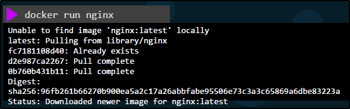

Comandi base:
docker run:
Usato per runnare i container, a partire di un immagine,
Di base suppone che l'immagine sia su Docker Hub ma è possibile
che l'immagine sia presa da altre fonti.
Una volta scaricata un immagine, sarà possibile riusarla per altri containers
senza la necessità di riscaricare la stessa immagine più volte.

docker ps:
Lista tutti i container presenti e delle informazioni di base a riguardo.
Docker genera in modo automatico degli ID e dei Names per i container.
Con l'opzione "-a" mostra anche i container che hanno dato errori o sono in exit.

docker stop [ContainerName or ContainerID]:
Possiamo usare il comando precedente su un container per stopparlo.
Possiamo passargli o il nome del container oppure l'ID del container.
NB: Questo comando ferma il container ma non lo cancella dalla memoria!

docker rm [ContainerName or ContainerID]:
Con questo comando, possiamo rimuovere completamente un container dalla memoria.

docker images:
Lista tutte le images scaricate e presenti sulla macchina.

docker rmi [image]:
Rimuove un immagine dalla macchina.
NB: Devi prima fermare e rimuovere tutti i container che hanno quell'immagine, prima di rimuovere l'immagine!

docker pull [image]:
Se vogliamo semplicemente scaricare un immagine e non usarla immediatamente,
possiamo usare il comando "pull" al posto del comando "run".
Questo permetterà di scaricare l'immagine senza usarla per nessun container.

Append a command:
Possiamo aggiungere dei comandi, dopo la creazione di un Container da eseguire!

docker exec [container] [command]:
Con in comando "exec" possiamo eseguire un comando sul container scelto!

Che succede se proviamo a farci runnare un OS sopra?

Notiamo che subito esce!
I Container sono usati per applicativi e processi: appena finiscono il loro scopo,
vengono distrutti.
Se gli applicativi interni al container crashano, il container fa exit.
Per questo motivo, se provi ad usare un app Ubuntu come image di un container,
non è utile: puoi usarla per altri motivi ma non per runnare il container stesso.
docker -d and attach:
Se proviamo a runnare alcune applicazioni, queste ci tengono
lo schermo in hanging.
Possiamo evitare questa cosa usando l'opzione "run -d" per far si
che venga mantenuto il Container in modalità Detached in background.
Possiamo poi successivamente fate Attach al Container
usando il comando "attach" e l'ID (o parte iniziale dell'ID) del container da fare Attach.

Se vogliamo assegnare un nome:
DOPO RUN --name namescelto